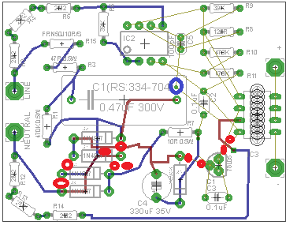

This project was inspired by http://openenergymonitor.org/emon/node/1849 when Jack Kelly asked “Is it possible to improve on the AC-AC adapter?”
Well, I shall have to leave you to judge if my ‘solution’ is worth the effort.
Having originally purchased a Mascot adapter from the Shop http://shop.openenergymonitor.com/ I didn’t really need another solution, but the question was cleverly phrased and the challenge was presented.
The best place to start for me (as so often seems to be the case) was with the Farnell catalogue, and so as I turned the pages.... and.. - there it was! – the Vishay IL300.
I doubt however if I would ever have started on this little project without the combination of a good dose of bad winter weather and a life long interest in electronics.
Robert Wall has kindly pointed out to me a couple of earlier threads on this topic:
http://openenergymonitor.org/emon/node/757
http://openenergymonitor.org/emon/node/1723
He has wisely been concerned that the construction of any device to accurately monitor voltage involves specialized knowledge and experience in working with potentially lethal voltages.
The device that I am proposing is no different from the others in this respect.
It is imperative that any person contemplating this project be made aware of the risks they face and the possibilities for DANGER to others. I am particularly thinking of the presence of children and animals while any live testing is attempted. Please exclude them from the area. I am sure that ‘the child’ in you has always tempted you to do that which you were specifically told not to do or which you thought would be okay anyway. In my experience ‘this child’ was with me till long after adolescence! Other adults in your household also need to be aware of what you are ‘up-to’ and should be advised of where the device can be safely isolated should your position be compromised.
I hope too, that if you are a member of this forum, you will take the time to read my profile. Having had at least one near-death experience with electricity myself, I have no wish to be asked to explain ‘what has just happened’ to a close relative of yours!
Having said that, the tedious bit is out the way and now I hope that the solution that I propose will not involve you in any need to perform live tests on exposed mains voltages. If you think that such tests might be necessary, or if you are having any difficulty in getting your GIVmon to work as expected, then I hope you will first put your question to this forum OR ask a suitably Competent Person for guidance before subjecting yourself to potential DANGER. If you should consult another person whom you think may be sufficiently experienced then PLEASE provide them with ALL this information. They will then be permitted to and must accurately make that judgment for themselves.
Before getting started on ‘the fun’ I should just like to express my thanks to my employer Robtec Automation Limited for the loan of the oscilloscope, isolating transformer and Variac that I use during evaluation and testing.
I am going to divide this project into a number of different phases.
I introduce you first to
GIVmonSCI
This is a Signal Conditioning Interface that takes the raw output from GIVmon and provides the ADC of your controller with an optimized signal. It can easily be constructed and is where any setting-up and adjustments are made. There are no dangerous voltages involved and it will be powered from the rest of your electronics. Change it as you see fit for your application.

The assembled unit
Circuit Diagram and Notes (PDF)
GIVmon
Construction Considerations
The design I am going to suggest is physically a plug-in replacement for the Mascot transformer. I do not advocate construction in any other form.

The enclosure is Multicomp PS5B. It comes complete with a mysterious piece of plastic that is actually provided to help form a barrier between primary and secondary. I fixed it in place with hot glue. The IL300 traverses this barrier.

The isolation barrier in position
Please be aware that the components that you see in my pictures mounted on the board at the assembly stages may differ in position or value from the final picture(s).
All cables that can potentially become detached from the board must be secured in such a way that if they are tugged or pulled they cannot become entangled in hazardous voltages or, in turn, present hazardous voltages to the SELV circuit. The enclosure comes with tails that are riveted to the Line and Neutral pins. Do not use the enclosure if these tails are insecurely attached (loose). Sleeve the tails up to the point where they enter the circuit board.

Side view before final assembly
For even a one-off or prototype, clearance and creepage distances between nodes must be recognized so as to avoid the risk of fire and to ensure the device remains non-hazardous in operation.
The following articles give some guide as to what can be done on a printed circuit board.
http://www.ce-mag.com/ce-mag.com/archive/01/03/ProductSafety.html
http://www.smps.us/pcbtracespacing.html
I hope that I have successfully observed all these rules in my construction. As you will see from the pictures, I have removed as much unnecessary copper from the strip-board as possible and taken care to place the components a good distance from each other in the areas where maximum potential difference occurs or is likely to occur in the event of single component failure.

The copper side of the circuit board
The most critical area involves the separation between primary (mains) and secondary (SELV) – the bit you will touch when working with the output signal. Here, the best approach is to cut a slot in the board so that the device’s quoted isolation voltage will stand the best chance of being maintained.
Primary Side Component Selection
My choice of components is based on a nominal 240V 50Hz mains supply and rudimentary calculations. I think it necessary to explain my choice of components at the ‘front end’ of this design. If you have any better suggestions to make, then please do, and there is one area in particular where I do seek help.
Many timers and controllers now use a Class X2 film capacitor to act as the main potential divider in their power supply stages and GIVmon is another neat application for the technique. A 0.47 µF capacitor has a reactance of 6.8 kΩ at 50Hz. If you tried to substitute this capacitor with a resistor of that value then you would dissipate 8.4 W of real power! That would be way too much for the confined enclosure that we are using here. The Class X2 300V~ capacitor is low-loss and sits there quietly taking it - most of the time.
Wikipedia article: Film Capacitor
However these sophisticated components can and do fail. We therefore have to take measures to ensure that they do not present the surroundings with an unacceptable risk of fire or any other safety hazard when they do fail. On cost grounds, I decided that a fusible resistor needed to be placed in series with the capacitor on the Line side. The idea is that the fusible resistor will go open circuit without causing fire if the capacitor should fail to a short circuit. I calculate that a fusible resistor of 10 Ω will dissipate approx 12 mW of power in this position when operating normally. So at what level of current should the fusible resistor be designed to blow? Well, in normal operation the average current through it will be roughly 35mA. Would 250mA be a reasonable figure to go for? — I don’t know! I am no expert on fuse characteristics and I would be happy to heed advice from any here that have better understanding.
(If I am reading the data sheet for the NFR25H series of devices correctly, when subjected to a power of 12 W they will blow in under 10 seconds…. If we take the fusing current to be 250mA then the resistor would need to have a value of greater than 190 Ω. A resistor of this value would dissipate around 240 mW in normal operation and drop typically 7 V. That just seems like rather a lot of power dissipation in normal circumstances to me. I am therefore throwing this open to the forum and await your comments.)
The other important component here is the 470 kΩ resistor in parallel with the X2 capacitor. Without this resistor a charge could remain on the pins of the adapter when you have unplugged it. It would be unlikely to harm you but might make you jump, a little!
The bridge rectifier formed by the 1N4007 (1,000 PIV) diodes produces a direct current to supply the sensing circuitry. The voltage produced is limited by shunt regulation through the Zener diode and by any other current drawn from the circuit. In my prototype I used a 1.3 W device which is adequate but I have suggested 3 W on the circuit diagram.
With a voltage drop across the fusing device necessary to achieve acceptable protection then it will be desirable to sample the supply voltage before it. I have chosen to use several high value resistors in series to form the potential divider for measurement. This means that no one component will be subjected to the full potential stress. The carbon film MCF 0.25 W series of resistors appear to be suited to the purpose. Three 2.2 MΩ resistors in series are used from Line to the op-amp non-inverting input and three from Neutral to the inverting input. I had not originally included the connection to Neutral and this resulted in an output that had a glitch just past the peak of the wave in each direction. I concluded that this was an effect of the bridge rectifier action. Well, its hardly noticeable now. I ended up putting the three Neutral resistors on the solder side of my prototype.
Stability of the TS912 needs to be watched. I found that if it does ‘kick-off’ you will see it on the SELV output. So it shouldn’t be necessary to prod around on the primary side. I ended up putting a second 47pF ceramic between output and inverting input.
The device that makes this project possible is the Vishay IL300. Please see the manufacturer’s data sheet for details of its operation.
The two devices that I was sent came with the Bin ‘C’ gain profile. I have not made any special modifications to the circuit component values that I originally determined prior to receiving them to cater for this gain range.

Circuit Diagram
When time permits I will present the results of my Tests. I don’t think you will be disappointed.
Incidentally, to achieve near zero phase shift at the output of GIVmonSCI you need to change the 1 µF coupling capacitor to something larger. The value of 1 µF appears to provide a phase shifted output comparable with the Mascot transformer as far as I can see.
Re: Galvanically Isolated Voltage Monitor - GIVmon
[This post has now been integrated into the above]
Re: Galvanically Isolated Voltage Monitor - GIVmon
You have been busy Rob! I'm impressed at the dedication you've shown to get this idea working.
It will be interesting to compare results with the basic transformer to see just how much difference it makes. I'm guessing it's going to be small but interesting non the less. Is there any change in phase shift with voltage for this approach?
Now if you could just squeeze the signal conditioning interface and a small switch-mode 5V supply into the case you would have a really neat single-socket solution for a/c and dc supplies :)
Well done!
Re: Galvanically Isolated Voltage Monitor - GIVmon
I wouldn't be happy with anything that could possibly be opened, how about using some potting compound (have a look at Maplins) once its completed and calibrated. Very high electrical isolation 18Kv/mm that should do it. apart from that looks great!
Re: Galvanically Isolated Voltage Monitor - GIVmon
Lots of time and effort has gone into this - well done.
Trystan: Any chance to get these units factory built and supplied ready tested as a replacement for the Mascot units?
Re: Galvanically Isolated Voltage Monitor - GIVmon
I suspect a) they'd need to be CE marked, and b) that would cost a fortune.
P.
Re: Galvanically Isolated Voltage Monitor - GIVmon
I'm pretty sure that "suspect" is wrong! - more like it's a cast iron certainty.
But from what I've read, making one for yourself is OK (most likely only because there's no way of enforcing a ban). I've seen nothing about supplying a kit, but I'm prepared to bet there's an obscure regulation somewhere that covers it and makes it prohibitively expensive.
Re: Galvanically Isolated Voltage Monitor - GIVmon
Okay, I'm going to keep this short! Having been at it every spare minute since I got the IL300 on Thursday, I'm about all in!
I am attaching a .pdf file with my operational tests (taken over the weekend), since I can't face wrestling with html (is it).
Now practically speaking, if this is considered to be a useful piece of kit by the rest of you then it is, in my opinion, NOT an item that could be supplied as a finished product. Product liability would certainly be an issue and there surely are only a very limited audience of you out there. I envisage that it might be a good pcb project for someone, but please, do it on a good quality glass fiber board and be mindful of the clearances and creepages. I doubt too that it would even be wise to sell it as a kit.
Safety Electrical Testing: I have the test equipment, the qualifications and the experience to Inspect & Test my own. I no longer have the Professional Indemnity Insurance in place to test others. When you build yours, if you cannot 'PASS' your own unit then please take it to a suitably qualified electrician and ask them to give it the once over for you.
Before any of this happens of course it would be nice to see a few more prototypes going. Well that's Chicken & Egg!
So, "The Genie is out of the bottle". Please take heed of my warnings and stay safe.
Re: Galvanically Isolated Voltage Monitor - GIVmon
Fusible Resistor
In the above documentation I left a BIG question mark hanging over the selection of a value for the fusible resistor.
While the Class X2 capacitor is designed, constructed and tested by manufacturer and standards agencies to handle the arduous conditions in across-supply situations, I have non-the-less seen the mess that they can occasionally make. I believe it is advisable to provide some sort of protection in the unlikely event of a short circuit failure of the Class X2 capacitor that might then prove to be a source for a fire.
Having thought of the fusible resistor as a cost effective solution to this potential problem I have never used these components in a circuit design before. In the process of justifying my choice of components in this crucial part of the circuit I became flummoxed at how to choose a value!
With conventional fuses you choose a value appropriate to the circuit conditions (usually limited by current carrying capacity of the conductors) and ensure that it has a rupture current that is adequate from what is known about the source of supply.
Fusible resistor data sheets specify neither a fusing current rating nor a rupture current.
For the fusible resistor, separation of the fault from the supply source occurs gradually. Although in practice by carrying out a few tests I am satisfied that it can be fast enough.
According to manufacturer’s data the resistance of the fusing device increases with temperature by at least 100 fold at which point it is declared to have interrupted or reduced the flow of current and power to a harmless extent. (In practice the fused resistance values that I measured were away up in the Mega-Ohms.)
Under such circumstances it is necessary to do some analysis of the circuit under the defined fault condition. It will also be appropriate to carry out practical tests too.
There are three other components in this circuit that are of significance here. The bridge rectifier (diodes), a 10 Ohm resistor (limiting inrush current to the electrolytic smoothing capacitor as it initially charges), and the 12v Zener diode. All of these components will be taking a current in excess of what is normally expected of them should the Class X2 capacitor unfortunately fail.
Ideally, the aim is to choose a fusible resistor value that will concentrate the power in it, rather than in these other components.
Also it is necessary to choose a value of fusible resistor that will work in the circuit under normal conditions.
The current drawn by the circuit under normal conditions is typically 35mA.
A value of 100 Ohms will drop 3.5V and dissipate 125mW. So seems like a good place to start.
I first selected a component from ‘Tyco Electronics NEOHM’: the FRN50J100R/S
http://www.te.com/catalog/pn/en/1625879-1?RQPN=FRN50J100R%2FS
This has a thermal impedance of 150C/W or thereabouts. In other words its temperature will rise by 19C when operating normally in this circuit. If we take the maximum ambient temperature to be 50C inside the enclosure it will operate in a region where no power de-rating is necessary.
In the event that X2 fails to a short circuit the full fault current will flow in all of the components in series: fusible resistor, the faulty shorted capacitor, rectifier diodes, limiting resistor and Zener diode. The power dissipated by each of them in turn will be directly proportional to the voltage across each. So we have as follows:
A circuit initial fault current of I = V / R
Where the supply voltage V = 256V rms worst case, and R = 100 + 10 = 110 Ohms
(I am going to ignore the bridge rectifier and Zener diodes for the moment.)
A current of 2.33 Amperes. (A total of nearly 600W at maximum rms supply voltage.)
At commencement of fault the instantaneous transient power will be dissipated and divided approximately as follows:
Zener: 12V x 2.33A = 28W (overloaded by 10x)
10 Ohm resistor 22V x 2.33A = 52W (overloaded by 100x)
Bridge rectifier diodes (x2) 0.7V x 2.33A = 1.6W each (overloaded 2.3x)
Fusible resistor 221V x 2.33A = 515W (overloaded 1,030x)
In the above case the fusible resistor is therefore overloaded by a factor in excess of one thousand times its rated power. The proportion of power taken by it will increase as its resistance increases and the fusing process takes place. At the same time the fault current through all of the other components will rapidly drop. All the other components in this circuit should be able to withstand the above level of overload for the brief time necessary for the fusing action to take place. In fact you can say that they can already do this because they are subjected to it every time the device is switched on! (Because the X2 capacitor will have zero voltage across it.)
So on the basis of the above very simple arithmetic I determined that a fusible resistor value of 100 Ohms 0.5W be used, the FRN50J100R/S.
The manufacturer claims that it will fuse in under 60 seconds with an overload of 16x OR under 15 seconds with an overload of 32x.
In practice we can never be certain what will happen during a component failure and the Class X2 capacitor is clearly designed for operation in Line to Neutral applications and has self-healing properties in the event of it being subjected to surges and spikes. But another failure mode might occur due to a gradual increase in dielectric losses.
At a circuit current of 0.25 A (3W to the 12V Zener) a power of 6.25W would be dissipated in the fusible resistor. This overload of 12x can be expected to cause a fusing action to take place in under 2 minutes.
Unfortunately, when I tried my chosen value in the circuit it soon became apparent that it simply would not do. Unless you are (very) fortunate enough to connect the device at a zero crossing point in the ac voltage waveform the inrush current at switch-on exhibits a very similar effect to the fault we are trying to protect against. The fuse invariably blows!
Following practical tests I am now sure that the best compromise is to install a fusible resistor of 10 Ohms in series with a current limiting resistor. I have chosen 47 Ohms 0.5W for this limiting resistor.
A simplified recalculation for the distribution of transitory powers in the revised circuit then becomes:
A circuit initial fault current of I = V / R
Where the supply voltage V = 256V rms worst case, and
R = 10 + 47 + 10 = 67 Ohms
(Ignoring the bridge rectifier and Zener diodes for the moment.)
A current of 3.82 Amperes. (So potentially 1,000W at maximum supply voltage.)
At commencement of fault the instantaneous or transient power could potentially be dissipated and divided approximately as follows:
Zener: 12V x 3.82A = 28W (overloaded by 15x - but only after
smoothing capacitor has charged)
10 Ohm resistor 38V x 3.82A = 145W (overloaded by 300x)
Bridge rectifier diodes (x2) 0.7V x 3.82A = 2.7W each (overloaded 4x)
47 Ohm resistor 180V x 3.82A = 688W (overloaded by 1,400x)
Fusible resistor 38V x 3.82A = 145W (overloaded 300x)
In the above I have restricted or simplified the analysis to an assessment based on root mean square values rather than peak values. I think this is a reasonable assumption to make since we are dependant on heating effect to produce the desired effect. That is to blow the fusible resistor.
During the repeated tests that I carried out with the above values I am pleased to say that no damage was caused to any components other than the fuse.
(For information, choosing a limiting resistor upper value of 220 Ohm at 0.5W left it stressed, reading 238 Ohms after just one test. In normal operation, this value also causes a small but unnecessary rise in temperature within the enclosure.)
Fusible Resistor Placement
It has come to my notice on reading up about these devices that manufacturers’ recommend that they should be located no closer than 13mm to the surfaces of flammable materials. It is therefore necessary to ensure that there is this clearance all around them. Specifically, they should be mounted at least this distance from the surface of the printed circuit board and the inside of the enclosure. Some repositioning of other components on the circuit board might be advisable to ensure this.
Some more information about electrical safety
I initially tested my GIVmon with a standard electrician’s multifunction tester using the 500V insulation resistance range. I have since tested it at 1,000V DC
Manufacturers of electrical appliances for sale in the UK will normally apply a ‘Hipot’ test during production to all units before despatch. The recognised standard for this is set out in BS EN 60065 (not that I have read it).
A test voltage of 2,120V peak is applied between the mains input pins and Operator usable extremities for a period of 60 seconds. Assuming there is no failure then the appliance is considered to have ‘Passed’ the Dielectric Withstand Voltage or ‘Hipot’ test.
Further Information
These links to information on X2 capacitors may be of additional interest:
http://uk.rs-online.com/web/p/polypropylene-film-capacitors/0334704/
http://www.kemet.com
Re: Galvanically Isolated Voltage Monitor - GIVmon
hmm.. with to much time on my hand this seems a fun and interesting one to make in eagle...
going to do full 3 phase monitoring myself I want everything to be as precise as I can get it (i'm a bit anal about precission)
but at the same time I was wondering how hard it would be to make an "world" version that could be used anywhere?
Re: Galvanically Isolated Voltage Monitor - GIVmon
You may well find that this will work on 110v 60Hz without circuit modification. The two that I have made seem to work fine down to about 125v on 50Hz before supply regulation is lost.
Have you managed to find a 'world' version adapter enclosure? Other world version products that I have seen seem to encourage you to trash more bits than you keep!
Re: Galvanically Isolated Voltage Monitor - GIVmon
hi...
i'm located in denmark but was thinking on the users in the US... have half the schematics done.
EDIT: well the us users could use an travel adapter.. and let me say this: UK plugs are some of the best.. very robust :-D
Re: Galvanically Isolated Voltage Monitor - GIVmon
now almost done with schematic... going to dinner and after i will read on the demands for isolation etc and then try make a pcb...
got an idea... would there be any harm in integrating the signal conditioner? and then make a minijack plug?
Re: Galvanically Isolated Voltage Monitor - GIVmon
got an idea... would there be any harm in integrating the signal conditioner? and then make a minijack plug?
boelle
Please don't! In the interests of safety please read the whole of my contribution. You can print off the complete works with the .pdf file that I posted above.
The signal conditioner belongs with the rest of the signal processing and adjustments will be necessary.
You don't want that anywhere near the live parts of this circuit.
Re: Galvanically Isolated Voltage Monitor - GIVmon
no no.... just me got an crazy idea.... of course it has to be safe... spec if others decide to copy of the pcb i make. Also the reason why i asked (to be extra sure.)
anyways the schematic are here... have double checked but want an extra set of eyes on it
one thing i could not see from your schematic is that some of the caps did not have volts on them, should they just be 35V or above?
Re: Galvanically Isolated Voltage Monitor - GIVmon
forgot to add the value for R3 and C1 plus R1
i read about the fusible resistor and got a bit confused... the value of 10 ohms i got but then you write it should be in series with a 47 Ohms 0.5W resistor... but that one was not on the schematic?
then R3.. should that one also be 0.5W ? and all the other i guess can just be 0.25W ? for firesafety i assume that all should be metal film resistors :-D
Re: Galvanically Isolated Voltage Monitor - GIVmon
boelle
Observations as follows:
IC2B pin 5 should go to node R5/R6 not R4/R5. R6 is 39KOhms.
R3 is two resistors: The fusible resistor must be specifically FRN50J10R/S (available from Farnell) in series with a 47 Ohm 0.5W resistor. Ensure adequate space around fusible resistor if doing a board layout. Also cut slot in board under IL300 opto-isolator to ensure adequate creepage distances between live parts of this circuit and the outside world.
R1, R3 and R7 should all be 0.5W. The rest can be 0.25W. Metal Film should be fine generally.
C1 must be a Class X2 capacitor of at least 275v ac working. Apart from the electrolytic, other capacitors ceramic - voltage not an issue.
Hope that helps.
Re: Galvanically Isolated Voltage Monitor - GIVmon
yep... just done with very crude board layout... and its late so there might be mistakes... but yes i plan to put in some drill holes under IL300 and then file it to a slot.
as for the the fusible i plan 1 cm of free air all around it.
below the crude first edition (unrouted) :-D
Re: Galvanically Isolated Voltage Monitor - GIVmon
just corrected the schematics... as i'm a bit ahead of time i think it will be the last from me today
Re: Galvanically Isolated Voltage Monitor - GIVmon
before i go....
as i have to wait another week before i can get the mascot, could i ask for the board dimension?
i know you made some cuts in the corner but i plan for drill holdes big enough for the board to fit over them.
hmm.. maybe make 2 versions.... one UK one and one for the transformer with euro plug
Re: Galvanically Isolated Voltage Monitor - GIVmon
and getting old and forgetting.... i read that about 1.3mm distance between tracks would be ok... i plan for a coated board
are there any rules or guidelines for placing the components?
again i dont want to screw up the safety,
Re: Galvanically Isolated Voltage Monitor - GIVmon
boelle
The size of your board will be dependent on the enclosure that you choose. The cut-outs in the side of my proto-type board were necessary because the enclosure that I chose contained reinforcing/strengthening ribs. You need to have one of these in your hands in order to see what is required. I do not advise modifying the enclosure itself in order to make your board fit since that will impair its strength and then could compromise its integrity in users hands.
Before that, you might like to do a bit of research into the manufacturer's details and recommendations for the various components. I am particularly thinking of the dimensions for the 0.47uF Class X2 capacitor... Class X2 capacitors are a 'wonder of the world' - well worth reading up about them.
R3 is not one resistor but two. Let us call them R3A and R3B, shall we?
I think you will find that R10 (being on the 'live' side) is far too close to the isolated output for comfort. Please read up about the requirements for clearances and creepages. I have provided information about where this information can be found.
As constructor it becomes your responsibility to heed the manufacturers' guidelines for the use of their components and as designer of the board it is you who takes the ultimate responsibility for the safety of 'the product' going forward.
Just a final point. You implied earlier that you wanted it to operate across 'all world'. I can only vouch for the component choice that I have made on systems operating between 192v and 256v 50Hz ac. If you intend to ship it into other territories then I suggest you do your own testing first.
Take care.
Re: Galvanically Isolated Voltage Monitor - GIVmon
i planned to use the same enclousure as you did...ie one UK adapter from the shop and one with EURO plug... it was just to get an approx idea on how big a board i could play on in eagle
i would never mod the enclousure... they have been made like they are for a reason (safety)
Yes... that's the reason why there are now a R15 next to R3... but i could rename it. Eagle do automatic update between board and schematic so it was more easy just inserting a extra resistor
Point taken.... also the board i posted was just a very crude first draft before i fell of the chair and crawled to bed... i will update and play arround while i read a bit more on those links.
The world idea was just one that came to mind... ie the thought was that the circuit would just output the ac curve in a safe way and it would prop work with most voltages... but i can see there is more to it..
my biggest problem is to try and slow down and think things over... i can get so excited that i just speed forward... on the side i also try to make a shield for the arduino mega that would allow me to monitor 3 phases with ac input for each (i like precission) and water plus 2 way ir com for my heatmeter... i have a thread here about it: http://openenergymonitor.org/emon/node/2039
i'm kind up against a wall.. i dont know if the sketch would calc just one phase or all of them and if it will use all 3 ac inputs. and i'm not sure if i have connected sensors to the right input so that i would not have to mod the library to much.
i'm just eager to get everything going...
Re: Galvanically Isolated Voltage Monitor - GIVmon
figured the size of board from the spec sheet on both the uk transformer and the euro plug one.
have read in the links and summed up that between tracks or pads there shuld be no less than 1.5mm. at least i have for now placed the components so that goal is meet for the holes... also added the slot under IL300
missing is to check the footprint for C1
attached PDF is a 1:1 copy of the board
EDIT: footprint for C1 adjusted.... very full board :-/
EDIT2: tried to do an autoroute in eagle... would like comments :-D also pointers if i still have mistakes
Re: Galvanically Isolated Voltage Monitor - GIVmon
Ok. This looks fairly typical for an auto-route job.
You have a lot more work to do boelle! But don't worry, there is plenty space on this board.
IC5 pin 5 goes around the houses doesn't it? You don't want it doing this since the output needs to be separate from the live components. You could try swapping the output pin designation over (move left pad to right) and watch what happens then.
The slot under IC3 could be a bit longer especially to the right. It is there to separate the SELV output from the live components and stop creepage. (SELV - seperated extra-low voltage)
You should be able to get C5, R8 & R9 much closer to IC2. You could move R6 down closer to R5 to achieve this.
If C1 is moved up a bit, there would be room for R1 below it. In my opinion the left side of R1 which is at high potential is way too close to the lower voltages. Creepage and clearances. Think about it for ALL the nodes all of the time.
You should be able to group R13 and R14 with R12 at the bottom right of the board in a mirror image to the potential divider chain on the left hand (LINE) side.
Try to keep in mind the voltage potentials on all of the tracks. You do not want to encourage the occurrence of high stress levels between opposite sides of the board either. Even given the luxury of a double sided board, when you are dealing with voltages above 30v it can be wise to use insulated wire links in order to achieve the necessary creepage and clearance distances.
Anyway, do try the above for starters and then lets have another look at it. Good fun isn't it?
Re: Galvanically Isolated Voltage Monitor - GIVmon
yes in fact I enjoy this... and there is a bit of learing in to it also... so your time is not going to waste...
so i think i will print your post and the latest copy of the board and bring them with me to bed
Re: Galvanically Isolated Voltage Monitor - GIVmon
Hi again Rob
I have just made some of the corrections, but you said IC5, you did mean IC2 right? have not corrected that one yet
I just did an auto route and have yet to move the tracks manual to get the clearances. But you might be right that some of the tracks are better done with insulated wire links. Should i just do them all with wire links or can some be normal tracks?
and thanks again for the help
bo
Re: Galvanically Isolated Voltage Monitor - GIVmon
Hello Bo
Typo on my part., Oops(!) IC5 should read IC3. You have already corrected that problem with your latest version. So we can move on.
Before we go for wire links, I am sure we can do better with some more re-organization of red and blue.
You see the blue track that joins R3 and R1. It is at Line potential. It passes over three red tracks that are all much closer to Neutral in potential. You have three points of high stress there, through the board. We don't need it! So by shifting C4, R7, Z1 to the right you can then move C1 to the right. Then move R1 up to the left and beside C1 beneath R3. The red that passes from D2 anode can pass under R1. But do it on the solder side of the board. (I am not sure which side red and blue are?) That will sort that one.
Next. The blue that passes from R14 to C5. I suggest arrange R12, R13 and R14 around the bottom left corner of the board, like as a mirror image of R2, R4 and R5 that are at the top left. Now move R8, R9 and C5 to the right of IC2. Swing R11 90degrees to beside R10 may help. That should encourage that blue to take a better route away from the mains input part of the circuit and again reduce stress.
Additionally let us move C2 to the right of R7 (above IC1 and C3). That is not a critical one but just makes it look neater to my eye.
Give that a go and lets have another look at it tomorrow. Patience is precision!
Sorry I do not have time to get back to you sooner during weekdays.
Oh just thought; check the pitch and hole size on Z1 while you are about it - looks a little bit mean to me.
Well done for persevering with this. It should look really good when its finished.
Rob
Re: Galvanically Isolated Voltage Monitor - GIVmon
oh.. before going at this again blue is buttom (solder side) and red is top (component side).
i could make PDF's of each layer if that makes it more easy to read...
also i can move the tracks a bit manual if the auto router goes to close to holes or other tracks. and if it keep bugging manual routing is an option too.
does it matter what track width beeing used?
hmm.. an important Q... even thou we make this very safe is there any way it can be sold via the shop without the shop owners getting blamed for anything? in denmark a shop owner that sells a kit would hardly getting any blame for something the user puts together themselfes... a ready to use product is something else thou. for the uk i dont know the rules.
EDIT: Tried to update the board as per your directions (learned something new today about what is meant by stress). There are still a few places red and blue are crossing but i think this time its on low volt side. As for Z1 i just picked a generic zener footprint, can try and look for one with smaller hole size. what would a fair size be just in case i dont find one?
as for insulation would you recommend a spray with laquer? i have tried it for a transformator that hummed and was told it was safe and in fact should give more insulation. (in the end it was the iron core that was loose)
EDIT2: by laquer i mean stuff like this: http://www.maplin.co.uk/pcb-lacquer-25345
Re: Galvanically Isolated Voltage Monitor - GIVmon
Bo
You can get mechanical data about components from good component distributors. For the zener there is a link from this page. I suggest that you check all components. Never make assumptions. You need to get it right...
We are getting a better grouping of components now but one or two things have happened to the layout since last time that you can do without. It will be worth spending some time correcting them.
The tracks from IC3 pin 2 going down, and IC3 pin 3 going up the board have moved close to the slot and under the chip. We want maximum clearances in this area. Persuade the router to put them back please.
I high stress point has appeared at R3 which for some reason has moved. R3 needs to go back where it was. So that it is above R1. R1 is in a good place now.
I am not happy with the track connection between D2 and IC2 pin 8. There will be (relatively) high currents circulating between the bridge rectifier and the clamp Z1 and smoothing C4. It is good practice to confine these currents to those components. Far better to make that track go around the bottom of the board rather than the top. Move D3 and D4 to the right slightly so that it can come straight down off D1 anode. Since C4 and Z1 are in parallel you should get a better layout if you put them side by side rather than one above the other. You may find this helps too for the larger pitch of Z1.
C5 should be much closer to IC2. Move it to the left of R8 and R9. Also while in this area I suggest move R10 above R11.
Having done the above I would now recommend that you swap red and blue over. So that you have most tracks happening on the solder side of the board.
I don't have time to answer the rest of your questions at present. But we can deal with them later.
Keep at it!
Rob
Re: Galvanically Isolated Voltage Monitor - GIVmon
just a few screens shots... been a busy day and not even done yet... will have to thinker with some tracks
Re: Galvanically Isolated Voltage Monitor - GIVmon
tried to do my best, might have missed a lot but my head's spinning a bit
Re: Galvanically Isolated Voltage Monitor - GIVmon
Bo
This is looking soo much better and your getting very close now. All the components are now grouped logically.
There are some minor adjustments that you can do to improve it further though. Try the following:
Reverse C4. (put positive at the bottom)
The blue track from D1 cathode to D4 anode. That can be a red track. Doing this will not present a high stress hazard since the bridge rectifier action will hold voltages within reasonable limits.
The blue track between D2 anode and Z1/C4 - That can be moved down a bit to give greater space away from the hot end of C1 and the hot end of R1. (Creepages and clearances.)
Similarly, the right end of R3 is quite close to the bottom of R6. I suggest move R3 down a bit closer to R1. Then you can swing R15 by 90 degrees clockwise into the space. This is the component that needs a lot of space around it. I suggest it will be a good idea to mount it on ceramic spacers to distance it off the board too.
Presumably something has gone a bit haywire with the slot under IC3. No doubt you can sort that out.
Then you have to decide what width you are going to make the tracks. The temptation is to make them too thin. I like them thick enough that if you need to change a component you can do so without fear of separating the roundal from the track.
There are no seriously large currents likely to flow in any parts of the circuit under normal conditions.
However in the event of a fault in the X2 capacitor (C1) a large current can flow un-till the fusible resistor blows. We need to make sure that the tracks that will be expected to carry this current can do so without themselves acting as the fuse.
So you first need to establish which components will be subjected to that over-current. The tracks of interest to us will be all those that connect these components and once you have established which these are you can make them (say) twice as thick as the rest. If you are unsure about this you can PM me with your suggestion (a list) of which components will be subjected to that high current?
Ok. That's enough from me for the moment! Good to see you are nearly there.
Rob
Re: Galvanically Isolated Voltage Monitor - GIVmon
hi rob
for under ic3 i just moved the drill holes so i forced the autorouter to stay on the right side
we agree on r15... my inital plan was to make an S bend on the leads so it would stop going through the board when there is say 1 cm of air under it.. my goal was 1 cm of free air all arround it.
as for the high current area my bet is R15, R3, R1, D1-D4
going to clean everything up and look if i can improve something and then upload another screenshot
/bo
Re: Galvanically Isolated Voltage Monitor - GIVmon
Hi Bo
'forced autorouter' That sounds like cheating to me !
Yep! You can do an S bend on the leads if you wish. I just thought it worth showing that there is a product one can use to achieve this effect. It is something that should be included on any parts list or kit to encourage constructor's to do the right thing. I suspect three of these beads will be required per lead in order to achieve a satisfactory spacing from the board.
(I think one of the manufacturer's recommends 13mm clearance but one can do a lot by spacing off the board. so I am happy with your goal for the layout.)
High (pulsating) current circulates through R15, R3, C1, D1-D4, PLUS R7, C4, and Z1.
R1 is not in this list. It is only included in the design to discharge C1 when the unit is disconnected.
If it is left out, users' may get a tingle if they touch the Line and Neutral pins immediately after unplugging the adapter!
Sounds like you may have to turn the autorouter off from here on in ;-)
Have Fun
Rob
Re: Galvanically Isolated Voltage Monitor - GIVmon
cheating? i would call it "creative thinking" :-D
and you are right, S bend is cutting corners and not the right way.... imagine things get very hot... a lead would melt but the beads would hold. so i stand corrected :-)
will correct the path thinkness... think i can do it before i fall a sleep
Re: Galvanically Isolated Voltage Monitor - GIVmon
trackwidth changed....
Re: Galvanically Isolated Voltage Monitor - GIVmon
oh btw.... do farnell sell to private individuals? i was thinking of making a shopping list complete with links to each single item.
when this one is done would it be better with a blog post? or would this thread be enough.. or a link to the thread in a blog?
but sure there is a bit more to it before we can call it done
Re: Galvanically Isolated Voltage Monitor - GIVmon
do farnell sell to private individuals?
Yes, and so does CPC. Same company, same products, but sometimes the prices differ so check both. Farnell has a minimum order value of (I think) twenty quid.
P.
Re: Galvanically Isolated Voltage Monitor - GIVmon
ok, its just because here in "stupid" denmark companys sometimes have the rodden idea that they will only deal with other company's... a bit the same as some UK sellers etc will only ship to UK even thou i'm inside the EU... difference is only my address and the postage that i have to pay :-D
But i will check a few as I get along... maybe both for the UK and myself... open to ideas for the rest of europe thou
could also make a list for the us... maybe digikey
Re: Galvanically Isolated Voltage Monitor - GIVmon
trying to locate parts on digikey... found all the resistors except R3.. i can find it with right ohm and watt but they are all listed as fusible... to get normal ones you have to order at least 100..
how big risk is to to use a carbon film for that one? might ask stupid here but i dont like the idea of a BOM that forces people to get 100 and only need 1
EDIT: found this one http://www.digikey.co.uk/product-detail/en/CFM12JT47R0/S47HCT-ND/2617622
Re: Galvanically Isolated Voltage Monitor - GIVmon
Parts List (Digi-Key) Prices in £ and € plus $.. Prices are pr item so you need to multiply if more of each one is needed:
R1 470 Kohm 1/2 W PPCHJ470KCT-ND 0,58 £ 0,68 $ 0,55 €
R2,R4,R5,R12,R13,R14 2,2 Mohm 1/4 W 2.2MGACT-ND 0,32 £ 0,46 $ 0,37 €
R15 10 Ohm 1/2 W NFR25H0001009JR500 0,33 £ 0,47 $ 0,38 €
R6, R9 39 Kohm 1/4 W 39KADCT-ND 0,52 £ 0,55 $ 0,60 €
R8 120 Ohm 1/4 W 120ADCT-ND 0,52 £ 0,55 $ 0,60 €
R10, R11 470 Kohm 1/4 W PCQJ470KCT-ND 0,33 £ 0,54 $ 0,44 €
R7 10 Ohm 1/2 W PPC10.0XCT-ND 0,16 £ 0,23 $ 0,19 €
R3 47 Ohm 1/2 W S47HCT-ND 0,08 £ 0,11 $ 0,09 €
D1,D2,D3,D4 1N4007 1N4007FSCT-ND 0,10 £ 0,14 $ 0,11 €
Z1 1N5927B 1N5927BGOS-ND 0,30 £ 0,43 $ 0,35 €
C1 0,47uF 300V 399-5985-ND 0,51 £ 0,73 $ 0,59 €
C4 330uF 35V P5167-ND 0,29 £ 0,41 $ 0,33 €
C5 100pF 445-4726-ND 0,20 £ 0,29 $ 0,24 €
C2,C3 0,1uF 445-5258-ND 0,20 £ 0,29 $ 0,24 €
IC2 Dual Op-Amp 497-7683-5-ND 1,09 £ 1,56 $ 1,27 €
IC1 5V Regulator LM78L05ACZNS/NOPB-ND 0,45 £ 0,65 $ 0,53 €
IC3 Optocoupler 751-1292-5-ND 3,12 £ 4,43 $ 3,60 €
Re: Galvanically Isolated Voltage Monitor - GIVmon
Bo
Busy yesterday so couldn't get back to you.
Have been looking at your latest layout but I have to say I am not happy with it. I think you must have had the autorouter switched ON rather than final tuning by manual adjustment.
Good board layout does require quite a bit of thought and attention to detail.
Before you turn the auto router off. I'd like you to try something for me. Save what you have done so far, you may need to come back to it.
I would like to know what happens if you swing C1 through 90degrees. Move D1-D4 down a bit and I suggest you also put C4 & Z1 below C1.
Thanks
Rob
PS. For anyone who would like to build this and cannot get the right fusible resistor, I will send you two, free of charge, if you send me a a return stamped self addressed envelope. PM me to establish initial communications!
Re: Galvanically Isolated Voltage Monitor - GIVmon
No problem. Will have a go at it later. Did try to move the tracks but will look at it and do manual tracks from now on, its so close and i dont want the risk of screwing up
EDIT: updated layou... auto router gave up on connecting C1... had to do that by hand hence the fat tracks under it
Re: Galvanically Isolated Voltage Monitor - GIVmon
Yes. I like this arrangement and you are very close now.
There are just a few final tweeks that I'd like to suggest you should make.
Can you make that thick red from D2 cathode run diagonally across to C1 or just have one 135 degree bend in it rather than three at 90 degrees?
Manually remove blue between D2 anode and IC2 pin 8. Insert red from IC2 pin 8 to R9 node with IC3 pin 2.
Move D1 & D2 in line with D3 & D4. (We don't need them offset any more.)
Put Z1 cathode at bottom. (Keep C4 as it is.)
Then tomorrow we can give it a thorough check over. So some separate images of red and blue might be handy.
Cheers!
Rob
Re: Galvanically Isolated Voltage Monitor - GIVmon
ok on it.....
EDIT: just a quick update... will try and fine polish how the tracks run to keep individual distances at the max (of what is possible)
Re: Galvanically Isolated Voltage Monitor - GIVmon
attached pdf's of both sides, top and buttom sides. they are scaled up to a factor of 4 so details are easy to look/read
Re: Galvanically Isolated Voltage Monitor - GIVmon
just a list of what i could see that might improve things a bit... not sure thou
blue track from ic2 pin 8... move that up just a tiny notch so its over the red track
maybe also arrange the downgoing part of that one so its more away from the holes (more to the middle of r8+r9 and on outside of r10+r11)
top hole on c5.. make the blue track go out at an 90 degree angle... think its purely cosmetic as the extra distance is minimal
vertical blue just to the left of IC1.. move it a bit away to get more clearance,.. same with track to the right of c3. also in same area blue tracks between r7+c2
blue track between d1 and d3 going to ic2 and ic3.... is there enough clearance to the holes or could it be tweaked?
to the read tracks....:
the one coming from c4 going to d2... as it passes d4 does it not come a bit to close to d4? i could center it between the holes
and the red one under ic2... would it hurt moving it more to the center ie away from the holes?
that was just what chought my eye
Re: Galvanically Isolated Voltage Monitor - GIVmon
Bo
Yes, lets have as much space between tracks and pads as possible.
However, at some point previously there are some tracks that have ended up where they should not be. We have to correct those first.
There is a blue track running under R10 that needs to be removed. Keep the blue connection from R9 to IC3 pin 2.
On the red there is a connection from C4(neg) diagonally to a 'cross' beside IC3 pin 2. That diagonal track needs to be removed between the via hole and the cross. Keep connection IC1, C3, IC3 pin2, IC2 pin 8. In fact, that connection with IC2 pin 8 can be picked up at R11. I hope you can see that?
Next, change track between IC2 pin3 and R11 from blue to red. You need now to connect from that via hole ( C4(neg) ) to IC2 pin 4. You can do that initially on red, skipping over the blue track that passes beneath to IC3 pin3 then 'via' and continue on blue.
While you are at it, please move the bridge rectifier diodes D1-D4 across a little towards C4 so that they are not quite so close to NEUTRAL terminal.
Then lets have another look at it.
Re: Galvanically Isolated Voltage Monitor - GIVmon
tried to remove the blue track under r10... eagle says its belong there since its on the schematic... it connects pin3 ic2, r10, r9 and ic3 pin 2
going on with the rest
Re: Galvanically Isolated Voltage Monitor - GIVmon
also moved d1-d4... but the 2 others fixes i have to look more at.. i might have changed something after i uploaded the pdf's and forgot to tell about it
Re: Galvanically Isolated Voltage Monitor - GIVmon
oh... tried to delete the track... cant do that but ripup is the right command... doh
Re: Galvanically Isolated Voltage Monitor - GIVmon
not quite... and eagle with not let me put a track there by hand... but it will from r10?
look at the last one and then will do a screen capture.. the removed tracks are replaced by a yellow line
Re: Galvanically Isolated Voltage Monitor - GIVmon
so i came down with 2 tracks not routed... one of them is the one under r10 and the other one is ic3 pin 2 to ic3 pin4
Re: Galvanically Isolated Voltage Monitor - GIVmon
Bo
Check your input data.
IC3 pin 2 to IC3 pin 4 is a direct short across the supply. You need to tell it.
Cheers!
Rob
Re: Galvanically Isolated Voltage Monitor - GIVmon
you mean the yellow line? thats a missing track
Re: Galvanically Isolated Voltage Monitor - GIVmon
The yellow line shorts the supply it needs to be removed.
Re: Galvanically Isolated Voltage Monitor - GIVmon
you misunderstand.... the yellow line is not a track.... it tells us that there are a connection on the schematic but its missing on the board
same between r9 and r10
Re: Galvanically Isolated Voltage Monitor - GIVmon
Bo
Please check the input details that you have given to the system against the schematic.
There should be no connection by either of these yellow lines.
They short out the supply. Do not include them.
Cheers!
Rob
Re: Galvanically Isolated Voltage Monitor - GIVmon
oh... will tomorrow... prop arround noon
Re: Galvanically Isolated Voltage Monitor - GIVmon
found an error on ic2 (swap of pin8 and pin4) corrected that and baam... the 2 yellow are gone... but autorouter might have screwed how the tracks run
Re: Galvanically Isolated Voltage Monitor - GIVmon
This is like watching two people playing chess. By email.
Fascinating though!
P.
Re: Galvanically Isolated Voltage Monitor - GIVmon
:) It reminded me of the blind man trying to solve Rubik's cube in the movie UHF (a classic movie if ever there was one!)..
http://www.youtube.com/watch?v=TYM4QKMg12o
Re: Galvanically Isolated Voltage Monitor - GIVmon
Thanks guys!
Bo
I am pleased that you found the reason for that problem. I hope you are learning something from this exercise.
There is one other issue that has to do with pin allocations. You need to check the layout of IC1 against the data sheet for the device on your BOM. The device on you BOM is a good one to choose because it has a higher maximum input voltage than alternatives.
I think then with that corrected you will have a layout that functions. However as you say, the autorouter has muddled the tracks up for you AGAIN. For example the blue from D2 anode has for the third(?) time come too close to the hot end of C1.
You need to take matters in hand and approach this in a more pro-active fashion.
I have, I believe, given you all the information that you need to achieve a working board. Thicken up ALL of the tracks, especially the ones that I mentioned earlier. Bare in mind also, that the etching process needs room to work, so make sure none pass too close to other tracks and roundals or there are likely to be a high number of rejects in production.
Have one more go at it, and please, make it count.
Rob
Re: Galvanically Isolated Voltage Monitor - GIVmon
i will... i do plan to order this board rather than etching it myself... about the thickning of the tracks i was going to put that last...
back tomorrow night with a new layout
Re: Galvanically Isolated Voltage Monitor - GIVmon
i might have got it or not... either way i have eyeballed this for days and tried my best....
how did i do?
Re: Galvanically Isolated Voltage Monitor - GIVmon
Bo
I have only taken a quick look at this, since I am required elsewhere in a minute, and quite honestly I don't have the time to go through it any more in detail.
I think you need to take a look at some example boards to get a feel for what it should look like.
I have to say that I cannot recommend anyone making it in this state.
Rob
Re: Galvanically Isolated Voltage Monitor - GIVmon
well i have tried and i thought i was up for the task, clearly i'm not... i have attached a zip with the eagle files and others are free to pick up from here.
Re: Galvanically Isolated Voltage Monitor - GIVmon
well i have tried and i thought i was up for the task, clearly i'm not... i have attached a zip with the eagle files and others are free to pick up from here.
Well done and I'd like to say thank you for putting the effort in.
Re: Galvanically Isolated Voltage Monitor - GIVmon
:-D would still love to see this finished thou...
Re: Galvanically Isolated Voltage Monitor - GIVmon
are there anyone who would like help me getting this one done? i could send you a finished board as a thank you... and i know that the housing can be bhought without the transformer, just have to figure where it was
Re: Galvanically Isolated Voltage Monitor - GIVmon
my offer still stands, the ones that help me get this right so its as safe as can be get leftover boards. I will order 10 and keep 3 myself. The boards i send out will be with components.
i have moved the components arround a bit and kept the tracks i could remember.... so far it looks like this (red track is top side and blue is buttom side):
BOM (Digikey):
R1 470 Kohm 1/2 W PPCHJ470KCT-ND
R2,R4,R5,R12,R13,R14 2,2 Mohm 1/4 W 2.2MGACT-ND
R15 10 Ohm 1/2 W NFR25H0001009JR500
R6, R9 39 Kohm 1/4 W 39KADCT-ND
R8 120 Ohm 1/4 W 120ADCT-ND
R10, R11 470 Kohm 1/4 W PCQJ470KCT-ND
R7 10 Ohm 1/2 W PPC10.0XCT-ND
R3 47 Ohm 1/2 W S47HCT-ND
D1,D2,D3,D4 1N4007 1N4007FSCT-ND
Z1 1N5927B 1N5927BGOS-ND
C1 0,47uF 300V 399-5985-ND
C4 330uF 35V P5167-ND
C5 100pF 445-4726-ND
C2,C3 0,1uF 445-5258-ND
IC2 Dual Op-Amp 497-7683-5-ND
IC1 5V Regulator LM78L05ACZNS/NOPB-ND
IC3 Optocoupler 751-1292-5-ND
farnell has the case for this, stock no: 301681
Re: Galvanically Isolated Voltage Monitor - GIVmon
updated board.... note that there are no slot under IC3... there should be but have to figure how to do it, egale does not do it native
Re: Galvanically Isolated Voltage Monitor - GIVmon
read up on clearance and creapage... from what i understand for 250V class it should be 3mm
now i tried my best to keep that but there are a few places left and i cant remember what is low voltage or not... could i get a few pointers? area's eagle say no go to are with red circles... the blue circle is a via that goes once i do the last tracks

Re: Galvanically Isolated Voltage Monitor - GIVmon
Ok I thought of a different approach to this shoot me down if its a really bad idea.
Could you not use a £4 pro min clone connected to the mains via a voltage divider?. That way you can use the A/D converter in the the pro mini to measure the voltage and then send the data out as an opt isolated serial stream. You could have a second opto isolated output as a start conversion pulse that way you could sync your I and V conversions also depending on the tolerance of your voltage divider you would get a much more accurate voltage. You would still need to provide power A nano clone may be cheaper with a cheep phone adapter. I suppose if you were feeling adventurous you could conect the CT to it and just have an optical POWER out.
Just A thought its probably been mentioned before.
Re: Galvanically Isolated Voltage Monitor - GIVmon
well thia have turned in to a kind of project i do when i learn something new, ie last night i found a table on clearance and creepage og thought i would remove everything but the thick tracks and try to get everything as close to 3mm apart as i could
actually the 3mm translates to 118 mils in eagle but i rounded up to 120 so it might be ok, will check tonight.... going out most the day to visit my parents...
still i would love rob to have a look when i think its done... i have also told eagle to keep new tracks 120mils apart but will lower that to the 118 figure whereever i can
Re: Galvanically Isolated Voltage Monitor - GIVmon
I was just wondering whether a cut down version of this http://www.cirrus.com/en/pubs/rdDatasheet/CRD5490-Z_RD1.pdf
maybee the way to go. With a CT socket instead of a shunt and no PIC to USB to UART converter. That way you can send pure power / voltage and current reading directly to the Emon. A PWmon.
PSU could be simplified with one of these.
http://www.digole.com/index.php?productID=458 fed by a cap drop and regulator.
Re: Galvanically Isolated Voltage Monitor - GIVmon
as i might do monitoring again i have revisited this one...
thoughts are still to do it, but meeh, want more than my set of eyes to look at it...
will dig out the eagle files and have a look....
anyone interested? and anyone want to help me get it right?
Re: Galvanically Isolated Voltage Monitor - GIVmon
anyways,
board looks like this in eagle as is... red diagnal line areas are where eagle can see that i do not have 128mil/3mm clearance, the blue area under IL300 is a milled slot
Re: Galvanically Isolated Voltage Monitor - GIVmon
Back at this....
Wondering if there would be any advantage to using SMD for bits of it? the thought behind is that it would give more clearance between the individual components, but of course the individual bit ends will be much closer and hence it might be an bad idea?
Re: Galvanically Isolated Voltage Monitor - GIVmon
Cleaned up the schematic a bit and now schematic looks like this:
Re: Galvanically Isolated Voltage Monitor - GIVmon
Board unrouted looks like this, red diagional areas are where the pitch between the legs does not match the clearance/creepage criteia i have set, blue square is a mille slot under the opto isolato
Re: Galvanically Isolated Voltage Monitor - GIVmon
Created a BOM:
https://docs.google.com/spreadsheet/ccc?key=0AkWwv0Q6wTaZdEtiSm1EZWlvRTV...
everyone with a google account can add comments, others can view...
Re: Galvanically Isolated Voltage Monitor - GIVmon
Did the routing etc... BOM still as last post unless there are better components to pick
Schematic:
Top Side of PCB:
Buttom side:
I tried to keep a 118mil clearnace/creepage where i could but it became more difficult the more to the ight i came,
The board should fit in a mascot case, lucky these can be gotten empty from RS, just have to find the no for it
Again anybody that will help me eval this so i can get it right will get my leftover boards and components to fit, there is a min. order of 10 boards from Utead in china and i only need 3 to begin with. Same goes for bit to stuff the boards
Eagle files also attached
Re: Galvanically Isolated Voltage Monitor - GIVmon
Aiming to send off the design for some prototype PCB's this week
Anyone who can help out telling how safe it is and what changes there is needed?
Re: Galvanically Isolated Voltage Monitor - GIVmon
a bit of news....
have got some quotes and figured what EU directives this falls under
Rohs is one
EMC is the other
finally the low voltage directive (even thou low voltage might seem "odd", but hey its the EU)
Rohs should be a simple one since every bit is Rohs compliance
The EMC should be excluded from what i have read, it only comes in effect if there are freq's above 9 KHz
Low voltage is something else, it will be encased in a wall plug adapter case, and it will use the IL300 optoisolator, not sure if that qualify for double insulation but think it does
Re: Galvanically Isolated Voltage Monitor - GIVmon
Q: What happens to the circuit as its tested with 1200V at the input?
what parts will blow etc? dont have a tester but would like to keep a bit ahead
Re: Galvanically Isolated Voltage Monitor - GIVmon
doh... forgot that testing is between input and output right?
long time ago since i have done a test
Re: Galvanically Isolated Voltage Monitor - GIVmon
Q: what license is the schematic released under? are people free do to as they please with it...?
or is there some limits on it in what people are allowed to use it for?
Re: Galvanically Isolated Voltage Monitor - GIVmon
ditching the project.... got both the givmon boards and signal condition interface...
anyone interested in taking the bare boards of my back ? paid 20,49+13,80$ for them and there are 10 of each
if interested send a PM... i might be very slow as i dont stop by each day and the e-mail alert system does not work
Re: Galvanically Isolated Voltage Monitor - GIVmon
Bo,
I found your project while searching for ideas to build an energy monitor with analog optocoupled isolation. Nice work! I've used the Agilent HCNR200 device to measure DC bus voltage in inverters, and 4-to-20mA communication circuits. It is similar to the Vishay IL300. Two issues always required care in order to meet UL or CE requirements - the circuit board layout, and primary side low voltage DC power requirements. I can certainly understand why the OpenEnergyMonitor hardware predominately uses off the shelf, safety certified AC adapters for primary side voltage sensing. As soon as you bring wires greater than 50V (or so) onto a circuit board safety becomes an issue. A manufacturer takes on the cost burden of meeting compliance and they pass along the expense. Calculating, testing, documenting, and ensuring limits to how much damage a simple fault can inflict in milliseconds can get expensive.
I've been following the amazing progress of the OpenEnergyMonitor community for years. In my work we apply off the shelf power monitoring equipment with web connectivity in residential and commercial properties. I've been considering building an EmonTX board with the ability to measure North and Central American style 240 split phase and 208 three phase, hence a transformerless sensing circuit could reduce cost and size. I also have concerns about the long term phase shift and low level coupling repeatability of third party transformers and how that could impact accuracy and field replacement headaches. An analog optocoupler circuit would also simplify installation. The two or three individual AC adapters plugged into phase separated outlets would be reduced to wires terminated to breakers in a service panel or a junction box and a properly safety rated connector on the EmonTx circuit board. Our company currently uses a Dent ElitePro power meter (and logger) for site evaluation and qualification work. It is an incredible device that is also hardened for portable use; they get their price rightfully so. My goal would be a circuit board in a suitable enclosure that can connect up as easy as a Dent - CTs and primary side lines, neutral, and ground - communicate over a RF link, and obtain secondary side logic power from the primary line to neutral voltage(s) or rechargeable batteries. Options for wifi or a simple three digit display for accumulated kWhrs or instantaneous power would be nice.
Glyn Hudson's emonTx V3.4 board is a great staring point for what I am considering. Once it gets cold outside I get time to pursue my "hey that would be neat" ideas. Add a search of OpenEnergyMonitor and BANG, I find Glyn's latest creation and your work with Rob. I use AVR processors for simple embedded DC power controls. My question, assuming this message finds you well as I hope, could you share any testing results or any other insights of your experience with your circuit boards? If it doesn't get warm here soon, and it won't, I will be connecting 240V split-phase onto a breadboard and checking the signal quality at the 328 analog inputs.
I understand some may say any discussion, suggestion, solution, link or fair warning on safety related matters delves into potential liability. Please understand I know the issues and have lived to write this post. In the past I have designed circuit boards for 480V and 4180V AC motor drive inverters and DC link systems. I currently work with circuit board designs and manufacturing of UL listed products. My goal is a design for a "UL listed" product that is a circuit board, enclosure, and application instructions. One of the non-technical rubs I can see is the open-source hardware and software models used in the OpenEnergyMonitor platform and any product with a UL or CE listing. Maybe you ran into this issue. As far as I know, and I talk with UL a few times per quarter, a UL listing is tied to a particular manufacturing organization. Producing the same exact design in a different manufacturing line requires a new UL listing since part of that requirement is a set of detailed production instructions that are often tied to specific pieces of calibrated equipment and tools. Open source publishing a design that is not ahj approved means nothing if the unit is not produced as registered. I need to contact Glyn and see if he has an opinion on the matter.
Sincerely,
Kevin
Dent meter (and logger)
http://www.powermeterstore.com/P16777/dent-elitepro-esp-xc-power-meters
Re: Galvanically Isolated Voltage Monitor - GIVmon
btw... boards was thrown off at recycle ..... no response :-D